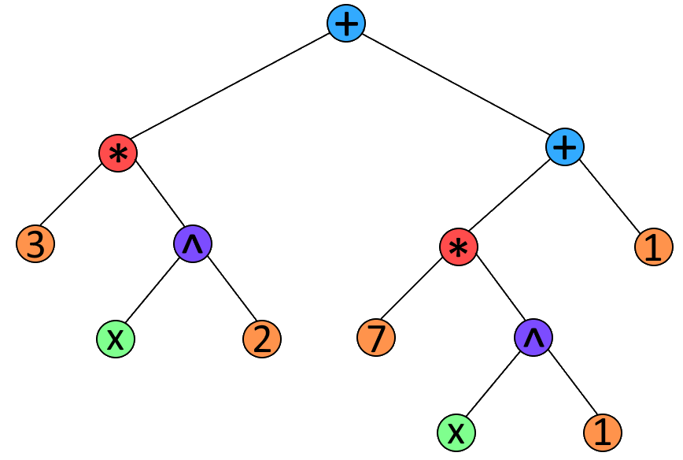

Primeiro Projeto para a UC de Programação Funcional e Lógica (PFL) na Faculdade de Engenharia do Porto (FEUP).
Para correr o programa com o ghci basta fazer os seguintes passos:
Neste primeiro trabalho prático de PFL decidimos usar uma árvore binária para representar os polinómios. Nesta árvore temos 6 nós que representam os valores que podem existir num polinómio:
Dividimos sempre a estrutura em dois, na tentativa de a tornar o mais equilibrada possível no aspeto de divisão de termos.
A seguinte imagem mostra um exemplo da utilização da árvore binária, para o polinómio "3*x^2 + 7 *x + 1":

Legenda:
A representação do polinómio com recurso a uma árvore binária pareceu-nos substancialmente mais simples no sentido em que as separações de termos e dentro dos termos ficariam mais claras e fáceis de atravessar.
Tal como foi mostrado na figura 1, os termos são separados por NoSoma's, pelo que se torna mais simples obter os termos.
Procurando recursivamente por NoSoma's, quando já não for encontrado um NoSoma significa que chegamos a um dos termos do polinómio.
Os coeficientes e variáveis, quando dentro de um termo são claramente diferenciáveis pelos NoProd's. Procurando por NoProd's, quando já não for encontrado um NoProd implica 1 de duas possibilidades:
A maior vantagem seria a operação de derivar, já que se tornou tão simples ao ponto de ser feita em apenas 1 função. Bastava trocar um NoPoten por um NoProd que multiplicava o expoente pela variavel elevada ao (expoente-1).
A maior desvantagem seria a normalização do polinómio, já que obrigou à utilização de várias funções auxiliares e algumas um pouco rebuscadas.
Na função normPoly recebemos uma string que representa um polinómio.
Primeiro transformamos a string numa árvore binária do tipo já apresentado.
De seguida encontramos todas as variáveis existentes no polinómio e colocamo-las numa lista ordenada.
Depois acumulamos numa lista (com o tamanho da anterior mas inicialmente preenchida com 0's) os coeficientes no índice correspondente às variáveis da lista anterior.
Finalmente concatenamos o polinómio na forma de uma string.
Retornamos uma string com o polinómio normalizado.
Na função sumPoly recebemos 2 strings, cada uma representando um polinómio.
Simplesmente concatenamos as strings com o carácter '+' e deixamos a normalização fazer o resto.
Retornamos uma string com o resultado da soma normalizado.
Na função multPoly recebemos 2 strings, cada uma representando um polinómio.
Primeiro separamos os termos dos dois polinómios em 2 listas, uma lista para cada conjunto de termos.
De seguida, juntamos cada termo da primeira lista com todos os termos da segunda lista através de um NoProd.
Finalmente, juntamos a lista resultante com NoSoma e deixamos a normalização fazer o resto.
Retornamos uma string com o resultado do produto normalizado.
Recebemos uma string que representa o polinómio e uma segunda string que representa a variável a ser derivada.
Simplesmente atravessamos recursivamente todos os nós:
- Se encontrar um NoProd:
- se encontra um NoPoten com um NoVar que seja igual à variável a ser derivada, troca o NoPoten por um NoProd que multiplica o expoente por um NoPoten com a variável elevada ao (expoente-1);
- senão ignora o NoNum, que é a única outra opção que pode aparecer;
- se encontrar um NoNum retorna zero;
- senão continua a travessia recursiva através dos NoSoma's.
Finalmente normalizamos a árvore resultante.
Retornamos uma string com o resultado da derivada normalizada.
No programa há uma secção de testes onde se podem observar exemplos de utilização para cada funcionalidade.
Normalização de '1*50 *100 + 100 + 2' = 5102
Normalização de '2* x^2 + 5* x + 2* x' = 7* x + 2*x^2
Normalização de '2* x* 5* x^6 + x^7* 2' = 12*x^7
Normalização de 'x^2* x^3* y + y* y' = x^5*y + y^2
Normalização de 'x^20* z^30* x^12' = x^32*z^30
Soma de '1* 50* 100 + 100' e '-500*10 + 2' = 102
Soma de '2* x^2 + 5* x' e '-x^2 + 2* x' = 7*x + x^2
Soma de '2* x* 5* x^6' e 'x^7* 2' = 12*x^7
Soma de 'x^2* x^3* y' e 'y* y' = x^5*y + y^2
Soma de 'x^20* z^30* x^12' e 'x^20* z^30* x^12' = 2* x^32*z^30
Produto de '1* 50*100' e '2' = 10000
Produto de 'x + 2' e 'x - 2' = -4 + x^2
Produto de '2* x^2* 5' e '5* y^2* 2' = 100* x^2*y^2
Produto de 'x^2 + y^2' e 'z^2 + x^2' = x^2* y^2 + x^2* z^2 + x^4 + y^2*z^2
Produto de 'x^20* z^30' e 'z^90* x^12' = x^32*z^120
Derivada de '5 + 10*2 + 25' em ordem a 'x' = 0
Derivada de '2* x^2 + 5* x + 2* x^3' em ordem a 'x' = 5 + 4* x + 6*x^2
Derivada de '2* x^2* y^3* z^5* 5' em ordem a 'y' = 30* x^2* y^2*z^5
Derivada de 'x^2* x^3* y + y* y' em ordem a 'y' = x^5 + 2*y
Derivada de 'x^20* z^30* x^12 - z^200 + 50' em ordem a 'z' = 30* x^32* z^29 - 200*z^199